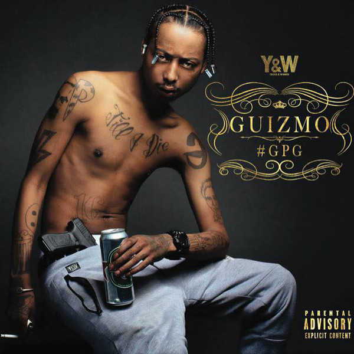
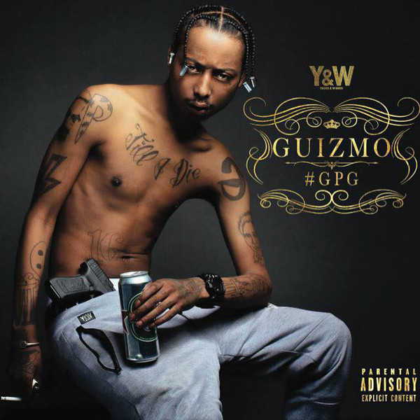

Guizmo
Biographie
Guizmo, de son vrai nom Lamine Diakité, né le 21 janvier 1991 dans le 13e arrondissement de
Paris, est un rappeur et auteur-interprète français.
En 2011, il fait ses débuts avec le collectif de rap L'Entourage, période durant laquelle il se fait
connaître et sort son premier album Normal.
Par la suite, il quitte le collectif et continue sa carrière solo, sortant les albums La Banquise et
C'est tout en 2012,
Guizmo a depuis de nombreuses années marqué la nouvelle scène du rap français, avec sa plume de virtuose
et un univers très personnel.
Dans ma ruche en 2014 suivi des albums Amicalement Vôtre en 2017 et Renard en 2018 ainsi qu’un double
album nommé GPG2 en 2019 il revient avec son cinquième et nouvel album studio, à 26 ans.
Cet album est au summum de sa maturité et il y traite des thèmes rudes, délicats mais reflétant toujours
la société actuelle,
il nous fait également traverser d'autres thèmes très intimistes où il nous décrit même ses proches tout
en nous livrant de nombreuses confidences personnelles au travers de musiques mélancoliques,
nostalgiques mais toujours criantes de vérité.
Albums

 
